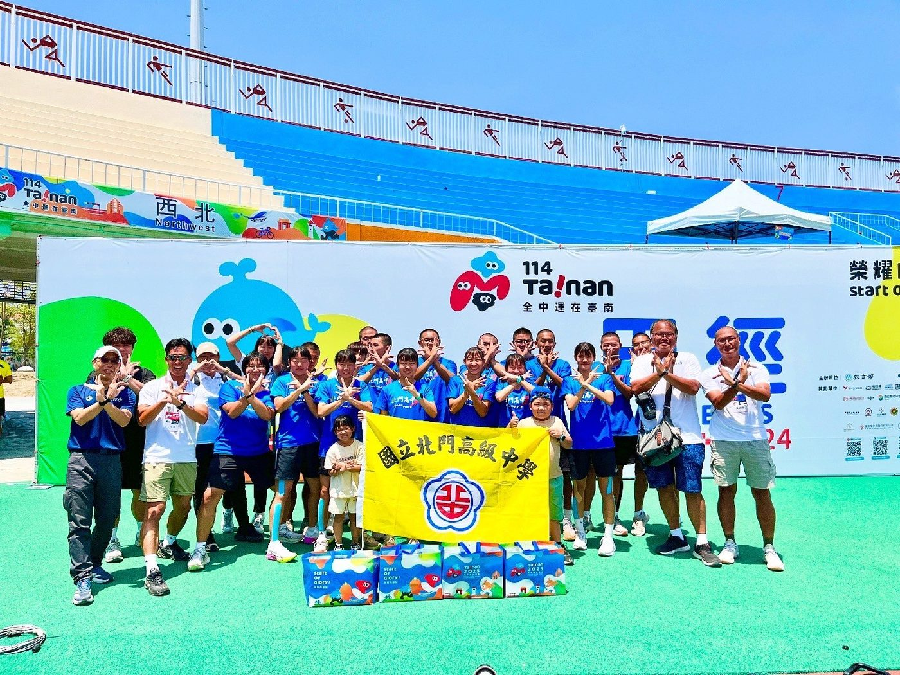
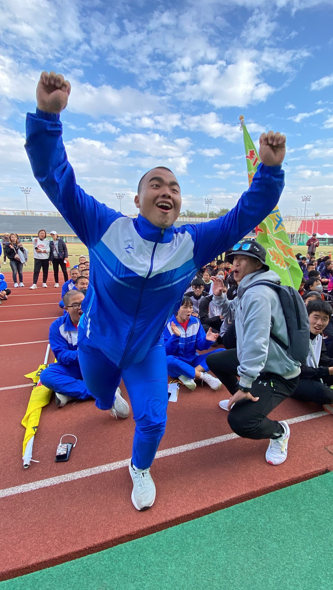

01我的故事
我的故事，從操場開始。
在大北門鹽分地帶，土地鹹澀、資源有限，但這裡孕育出最堅毅的孩子。佳里區的北門高中，就是在這片看似貧瘠卻充滿希望的土地上，培養出一群懷抱夢想的少年少女。
89學年度，北門高中正式成立體育班，田徑隊也在那一年誕生。從一開始的簡陋場地，到如今逐步建立起完整的訓練體系，靠的不只是環境，而是學生們一天天的汗水與堅持。太陽還沒升起，田徑場上已響起鞋釘踏地的聲音；夜幕低垂，燈光下仍能看見孩子們反覆練習的身影。
這裡的學生，許多來自清寒或弱勢家庭，經濟上的壓力往往成為最大的阻力。但他們從不喊苦，反而因為環境艱困，更懂得珍惜每一次訓練、每一次比賽的機會。對他們來說，田徑不只是運動，而是一條通往未來的道路。


推薦理由
北門高中位於大北門鹽分地帶，培養了無數優秀田徑選手，除了在比賽場上屢獲佳績，更讓學生在學業上展現自律、專注與堅毅的態度，成為學科與術科並重的典範。
然而，田徑選手在訓練過程中面臨裝備、營養與經費的壓力。孩子們懷抱夢想並努力不懈，卻常因資源不足而受限，甚至影響參賽機會。若能獲得企業支持，將能大幅減輕選手的負擔，讓他們專注於訓練與比賽，展現最佳實力。
我們誠摯希望貴單位能成為孩子們的後盾，一同打造更完善的學習與訓練環境，培育全方位的優秀運動員，並助他們登上國際舞台，為國家與學校爭光。